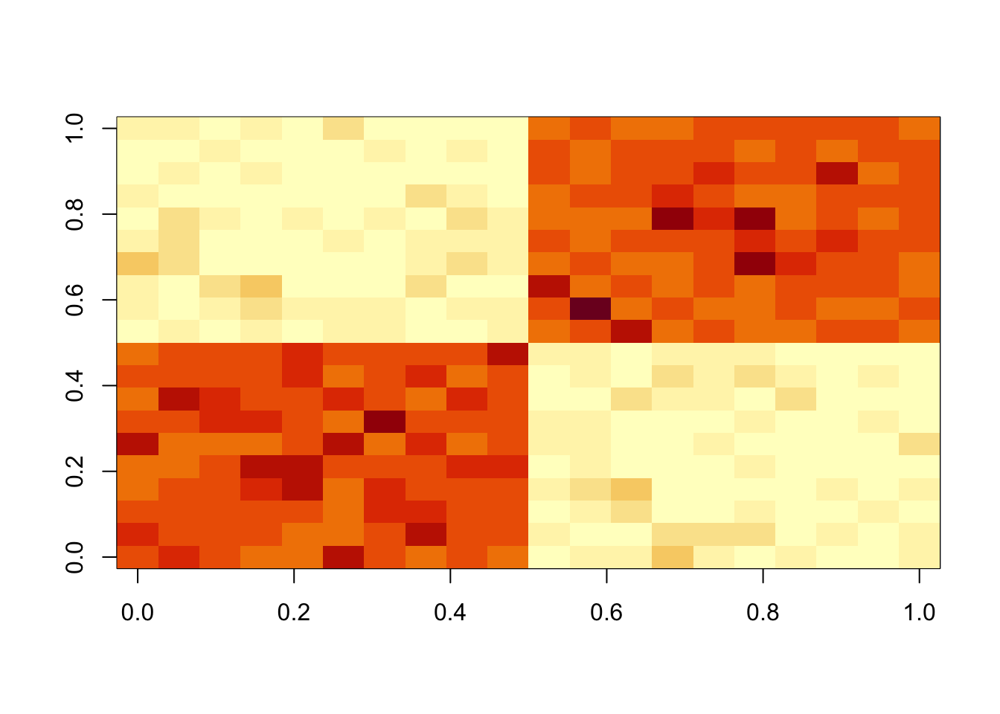
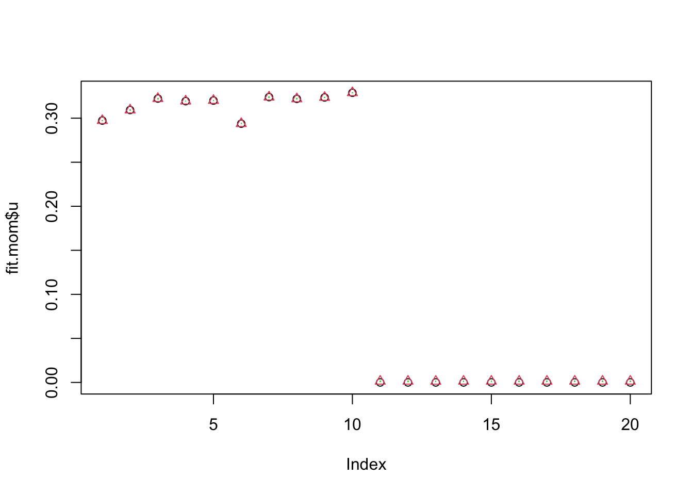
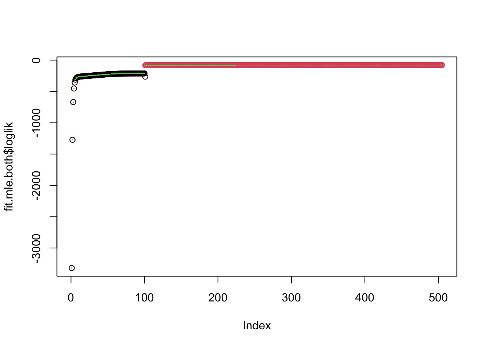
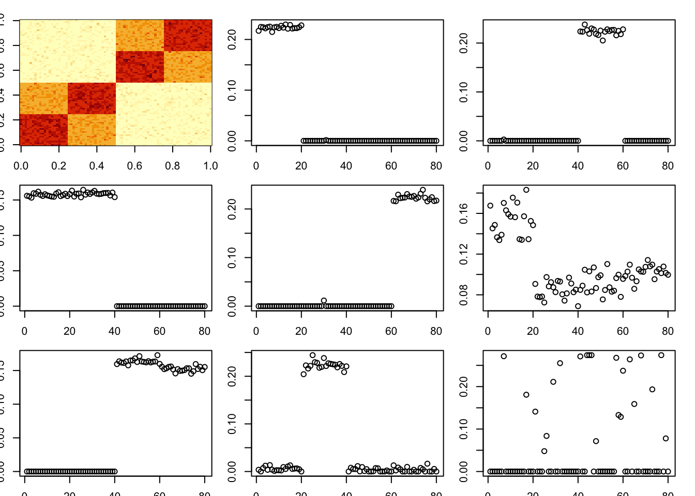
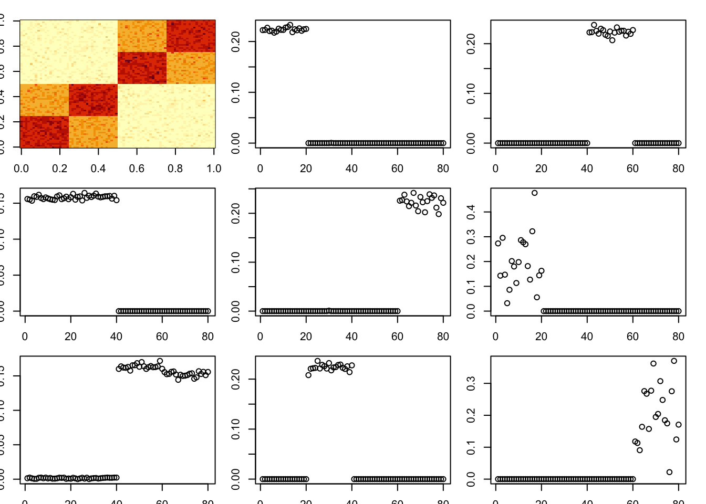

nmu_em
Matthew Stephens
2025-02-23
Last updated: 2025-02-26
Checks: 7 0
Knit directory: misc/analysis/
This reproducible R Markdown analysis was created with workflowr (version 1.7.1). The Checks tab describes the reproducibility checks that were applied when the results were created. The Past versions tab lists the development history.
Great! Since the R Markdown file has been committed to the Git repository, you know the exact version of the code that produced these results.
Great job! The global environment was empty. Objects defined in the global environment can affect the analysis in your R Markdown file in unknown ways. For reproduciblity it’s best to always run the code in an empty environment.
The command set.seed(1) was run prior to running the
code in the R Markdown file. Setting a seed ensures that any results
that rely on randomness, e.g. subsampling or permutations, are
reproducible.
Great job! Recording the operating system, R version, and package versions is critical for reproducibility.
Nice! There were no cached chunks for this analysis, so you can be confident that you successfully produced the results during this run.
Great job! Using relative paths to the files within your workflowr project makes it easier to run your code on other machines.
Great! You are using Git for version control. Tracking code development and connecting the code version to the results is critical for reproducibility.
The results in this page were generated with repository version 19e41fe. See the Past versions tab to see a history of the changes made to the R Markdown and HTML files.
Note that you need to be careful to ensure that all relevant files for
the analysis have been committed to Git prior to generating the results
(you can use wflow_publish or
wflow_git_commit). workflowr only checks the R Markdown
file, but you know if there are other scripts or data files that it
depends on. Below is the status of the Git repository when the results
were generated:
Ignored files:
Ignored: .DS_Store
Ignored: .Rhistory
Ignored: .Rproj.user/
Ignored: analysis/.RData
Ignored: analysis/.Rhistory
Ignored: analysis/ALStruct_cache/
Ignored: data/.Rhistory
Ignored: data/methylation-data-for-matthew.rds
Ignored: data/pbmc/
Ignored: data/pbmc_purified.RData
Untracked files:
Untracked: .dropbox
Untracked: Icon
Untracked: analysis/GHstan.Rmd
Untracked: analysis/GTEX-cogaps.Rmd
Untracked: analysis/PACS.Rmd
Untracked: analysis/Rplot.png
Untracked: analysis/SPCAvRP.rmd
Untracked: analysis/abf_comparisons.Rmd
Untracked: analysis/admm_02.Rmd
Untracked: analysis/admm_03.Rmd
Untracked: analysis/bispca.Rmd
Untracked: analysis/cache/
Untracked: analysis/cholesky.Rmd
Untracked: analysis/compare-transformed-models.Rmd
Untracked: analysis/cormotif.Rmd
Untracked: analysis/cp_ash.Rmd
Untracked: analysis/eQTL.perm.rand.pdf
Untracked: analysis/eb_prepilot.Rmd
Untracked: analysis/eb_var.Rmd
Untracked: analysis/ebpmf1.Rmd
Untracked: analysis/ebpmf_sla_text.Rmd
Untracked: analysis/ebspca_sims.Rmd
Untracked: analysis/explore_psvd.Rmd
Untracked: analysis/fa_check_identify.Rmd
Untracked: analysis/fa_iterative.Rmd
Untracked: analysis/flash_cov_overlapping_groups_init.Rmd
Untracked: analysis/flash_test_tree.Rmd
Untracked: analysis/flashier_newgroups.Rmd
Untracked: analysis/flashier_nmf_triples.Rmd
Untracked: analysis/flashier_pbmc.Rmd
Untracked: analysis/flashier_snn_shifted_prior.Rmd
Untracked: analysis/greedy_ebpmf_exploration_00.Rmd
Untracked: analysis/ieQTL.perm.rand.pdf
Untracked: analysis/lasso_em_03.Rmd
Untracked: analysis/m6amash.Rmd
Untracked: analysis/mash_bhat_z.Rmd
Untracked: analysis/mash_ieqtl_permutations.Rmd
Untracked: analysis/methylation_example.Rmd
Untracked: analysis/mixsqp.Rmd
Untracked: analysis/mr.ash_lasso_init.Rmd
Untracked: analysis/mr.mash.test.Rmd
Untracked: analysis/mr_ash_modular.Rmd
Untracked: analysis/mr_ash_parameterization.Rmd
Untracked: analysis/mr_ash_ridge.Rmd
Untracked: analysis/mv_gaussian_message_passing.Rmd
Untracked: analysis/nejm.Rmd
Untracked: analysis/nmf_bg.Rmd
Untracked: analysis/nmu_split.Rmd
Untracked: analysis/nonneg_underapprox.Rmd
Untracked: analysis/normal_conditional_on_r2.Rmd
Untracked: analysis/normalize.Rmd
Untracked: analysis/pbmc.Rmd
Untracked: analysis/pca_binary_weighted.Rmd
Untracked: analysis/pca_l1.Rmd
Untracked: analysis/poisson_nmf_approx.Rmd
Untracked: analysis/poisson_shrink.Rmd
Untracked: analysis/poisson_transform.Rmd
Untracked: analysis/qrnotes.txt
Untracked: analysis/ridge_iterative_02.Rmd
Untracked: analysis/ridge_iterative_splitting.Rmd
Untracked: analysis/samps/
Untracked: analysis/sc_bimodal.Rmd
Untracked: analysis/shrinkage_comparisons_changepoints.Rmd
Untracked: analysis/susie_cov.Rmd
Untracked: analysis/susie_en.Rmd
Untracked: analysis/susie_z_investigate.Rmd
Untracked: analysis/svd-timing.Rmd
Untracked: analysis/temp.RDS
Untracked: analysis/temp.Rmd
Untracked: analysis/test-figure/
Untracked: analysis/test.Rmd
Untracked: analysis/test.Rpres
Untracked: analysis/test.md
Untracked: analysis/test_qr.R
Untracked: analysis/test_sparse.Rmd
Untracked: analysis/tree_dist_top_eigenvector.Rmd
Untracked: analysis/z.txt
Untracked: code/multivariate_testfuncs.R
Untracked: code/rqb.hacked.R
Untracked: data/4matthew/
Untracked: data/4matthew2/
Untracked: data/E-MTAB-2805.processed.1/
Untracked: data/ENSG00000156738.Sim_Y2.RDS
Untracked: data/GDS5363_full.soft.gz
Untracked: data/GSE41265_allGenesTPM.txt
Untracked: data/Muscle_Skeletal.ACTN3.pm1Mb.RDS
Untracked: data/P.rds
Untracked: data/Thyroid.FMO2.pm1Mb.RDS
Untracked: data/bmass.HaemgenRBC2016.MAF01.Vs2.MergedDataSources.200kRanSubset.ChrBPMAFMarkerZScores.vs1.txt.gz
Untracked: data/bmass.HaemgenRBC2016.Vs2.NewSNPs.ZScores.hclust.vs1.txt
Untracked: data/bmass.HaemgenRBC2016.Vs2.PreviousSNPs.ZScores.hclust.vs1.txt
Untracked: data/eb_prepilot/
Untracked: data/finemap_data/fmo2.sim/b.txt
Untracked: data/finemap_data/fmo2.sim/dap_out.txt
Untracked: data/finemap_data/fmo2.sim/dap_out2.txt
Untracked: data/finemap_data/fmo2.sim/dap_out2_snp.txt
Untracked: data/finemap_data/fmo2.sim/dap_out_snp.txt
Untracked: data/finemap_data/fmo2.sim/data
Untracked: data/finemap_data/fmo2.sim/fmo2.sim.config
Untracked: data/finemap_data/fmo2.sim/fmo2.sim.k
Untracked: data/finemap_data/fmo2.sim/fmo2.sim.k4.config
Untracked: data/finemap_data/fmo2.sim/fmo2.sim.k4.snp
Untracked: data/finemap_data/fmo2.sim/fmo2.sim.ld
Untracked: data/finemap_data/fmo2.sim/fmo2.sim.snp
Untracked: data/finemap_data/fmo2.sim/fmo2.sim.z
Untracked: data/finemap_data/fmo2.sim/pos.txt
Untracked: data/logm.csv
Untracked: data/m.cd.RDS
Untracked: data/m.cdu.old.RDS
Untracked: data/m.new.cd.RDS
Untracked: data/m.old.cd.RDS
Untracked: data/mainbib.bib.old
Untracked: data/mat.csv
Untracked: data/mat.txt
Untracked: data/mat_new.csv
Untracked: data/matrix_lik.rds
Untracked: data/paintor_data/
Untracked: data/running_data_chris.csv
Untracked: data/running_data_matthew.csv
Untracked: data/temp.txt
Untracked: data/y.txt
Untracked: data/y_f.txt
Untracked: data/zscore_jointLCLs_m6AQTLs_susie_eQTLpruned.rds
Untracked: data/zscore_jointLCLs_random.rds
Untracked: explore_udi.R
Untracked: output/fit.k10.rds
Untracked: output/fit.nn.pbmc.purified.rds
Untracked: output/fit.nn.rds
Untracked: output/fit.nn.s.001.rds
Untracked: output/fit.nn.s.01.rds
Untracked: output/fit.nn.s.1.rds
Untracked: output/fit.nn.s.10.rds
Untracked: output/fit.snn.s.001.rds
Untracked: output/fit.snn.s.01.nninit.rds
Untracked: output/fit.snn.s.01.rds
Untracked: output/fit.varbvs.RDS
Untracked: output/fit2.nn.pbmc.purified.rds
Untracked: output/glmnet.fit.RDS
Untracked: output/snn07.txt
Untracked: output/snn34.txt
Untracked: output/test.bv.txt
Untracked: output/test.gamma.txt
Untracked: output/test.hyp.txt
Untracked: output/test.log.txt
Untracked: output/test.param.txt
Untracked: output/test2.bv.txt
Untracked: output/test2.gamma.txt
Untracked: output/test2.hyp.txt
Untracked: output/test2.log.txt
Untracked: output/test2.param.txt
Untracked: output/test3.bv.txt
Untracked: output/test3.gamma.txt
Untracked: output/test3.hyp.txt
Untracked: output/test3.log.txt
Untracked: output/test3.param.txt
Untracked: output/test4.bv.txt
Untracked: output/test4.gamma.txt
Untracked: output/test4.hyp.txt
Untracked: output/test4.log.txt
Untracked: output/test4.param.txt
Untracked: output/test5.bv.txt
Untracked: output/test5.gamma.txt
Untracked: output/test5.hyp.txt
Untracked: output/test5.log.txt
Untracked: output/test5.param.txt
Unstaged changes:
Modified: .gitignore
Modified: analysis/flashier_log1p.Rmd
Modified: analysis/flashier_sla_text.Rmd
Modified: analysis/logistic_z_scores.Rmd
Modified: analysis/mr_ash_pen.Rmd
Modified: analysis/susie_flash.Rmd
Note that any generated files, e.g. HTML, png, CSS, etc., are not included in this status report because it is ok for generated content to have uncommitted changes.
These are the previous versions of the repository in which changes were
made to the R Markdown (analysis/nmu_em.Rmd) and HTML
(docs/nmu_em.html) files. If you’ve configured a remote Git
repository (see ?wflow_git_remote), click on the hyperlinks
in the table below to view the files as they were in that past version.
| File | Version | Author | Date | Message |
|---|---|---|---|---|
| Rmd | 19e41fe | Matthew Stephens | 2025-02-26 | wflow_publish("nmu_em.Rmd") |
Introduction
My goal is to fit a version of the non-negative matrix underapproximation using an EM algorithm.
The model is: \[A \sim uv' + b + e\] where \(b \sim Exp(\lambda)\) and \(e \sim N(0,sigma^2)\). Or in other words, \(A \sim N(uv' + b,\sigma^2)\). If \(\sigma^2=0\) then the mle for u,v should be a feasible solution to the underapproximation problem. Introducing \(\sigma\) allows us to implement an EM algorithm.
More generally, the intuition is that if \(sigma^2\) is very small (compared with \(1/\lambda\)) then this will approximately solve (a version of) the non-negative matrix underapproximation problem. If \(1/\lambda\) is very small compared with \(\sigma\) then it will be closer to regular NMF.
NOTE: we could even use this idea within flashier to put priors on u and v…
The ELBO is \[F(u,v,q)= E_q((-1/2\sigma^2)||A-uv'-b||_2^2) + D_{KL}(q,g)\] where \(g\) is the prior on \(b\), \[g(b)=\lambda \exp(-\lambda b).\] Here \(q\) plays the role of the (approximate) posterior distribution on \(b\).
Given \(q\), this is minimized for \(u,v\) by solving \[\min_{u,v} ||A-\bar{b} - uv'||_2^2\] For now we will do this approximately, by thresholding the rank 1 svd of \(A-\bar{b}\). NOTE: I do this currently by thresholding udv’; I could instead try thresholding u and v (which is more in keeping with requiring them to be non-negative) and should probably try that later.
Given \(u,v\) this is minimized by for each \(b_{ij}\) by solving \[q(b) \propto g(b) \exp((-1/2\sigma^2)(x_{ij}-b)^2) \propto \exp((-1/2\sigma^2)[b^2-2(x_{ij}-\lambda \sigma^2)b])\] where \(x_{ij} = A_ij - u_i v_j\). This is a truncated normal distribution, \[ q(b_{ij}) = N_+(x_{ij}-\lambda \sigma^2, \sigma^2)\].
Example: Suppose \(\sigma\) is very small. Suppose \(x=-0.5\), and we have \(x \sim N(b,\sigma^2)\) and \(b \sim Exp(1)\).
x=-0.5
b = seq(0,1,length=100)
logprior = dexp(b,log=TRUE)
loglik = dnorm(-0.5,b,sd=1,log=TRUE)
plot(exp(logprior+loglik))
loglik = dnorm(-0.5,b, sd=0.1, log=TRUE)
plot(exp(logprior+loglik))
sigma=1
x = seq(-0.5,0.5,length=20)
plot(x,truncnorm::etruncnorm(0,Inf,x-sigma^2,sigma))
sigma=0.01
x = seq(-0.5,0.5,length=20)
plot(x,truncnorm::etruncnorm(0,Inf,x-sigma^2,sigma))
Approach 1: thresholding M
Let’s try. First I simulate some data for testing -
set.seed(1)
n = 10
maxiter = 1000
x = cbind(c(rep(1,n),rep(0,n)), c(rep(0,n),rep(1,n)))
E = matrix(0.1*rexp(2*n*2*n),nrow=2*n)
E = E+t(E) #symmetric errors
A = x %*% t(x) + EThis is a first try with lambda=sigma=1. This didn’t do exactly what I wanted (which is an under-approximation), but maybe not surprising as lambda and sigma are similar.
lambda = 1
sigma = 1
b = matrix(0,nrow=nrow(A),ncol=ncol(A))
for(i in 1:maxiter){
A.svd = svd(A-b)
M = A.svd$d[1]* A.svd$u[,1] %*% t(A.svd$v[,1])
M = ifelse(M<0,0,M)
b = matrix(truncnorm::etruncnorm(a=0,mean= A-M-lambda*sigma^2,sd=sigma),nrow=2*n)
}
image(M)
Now I try sigma small, to try to put the errors in the exponential part and force an underapproximation. This work better, but it is not strictly an underapproximation.
lambda = 1
sigma = .1
b = matrix(0,nrow=nrow(A),ncol=ncol(A))
for(i in 1:maxiter){
A.svd = svd(A-b)
M = A.svd$d[1]* A.svd$u[,1] %*% t(A.svd$v[,1])
M = ifelse(M<0,0,M)
b = matrix(truncnorm::etruncnorm(a=0,mean= A-M-lambda*sigma^2,sd=sigma),nrow=2*n)
}
image(M)
min(A-b)[1] -0.07059372min(A-A.svd$d[1]* A.svd$u[,1] %*% t(A.svd$v[,1]))[1] 0.02239963lambda = 1
sigma = .01
b = matrix(0,nrow=nrow(A),ncol=ncol(A))
for(i in 1:maxiter){
A.svd = svd(A-b)
M = A.svd$d[1]* A.svd$u[,1] %*% t(A.svd$v[,1])
M = ifelse(M<0,0,M)
b = matrix(truncnorm::etruncnorm(a=0,mean= A-M-lambda*sigma^2,sd=sigma),nrow=2*n)
}
image(M)min(A-b)[1] -0.003307836min(A-A.svd$d[1]* A.svd$u[,1] %*% t(A.svd$v[,1]))[1] 0.008896136So this is still not an underapproximation (and also u and v are not non-negative).
A.svd$u[,1] [1] -3.532064e-01 -3.408483e-01 -2.994702e-01 -3.289122e-01 -3.005021e-01
[6] -2.694988e-01 -2.925585e-01 -2.878785e-01 -3.508508e-01 -3.179764e-01
[11] -4.226460e-02 -8.810541e-03 9.533596e-05 -4.853362e-03 5.891319e-05
[16] -4.262211e-02 -1.151787e-02 -2.184533e-02 -3.587380e-02 -5.177057e-04Before moving on to thresholding u and v, I note that the result can depend on the scale of lambda, sigma. We might want to frame the problem a bit differently to avoid that… eg by \(A = \sigma(uv'+b+e)\) where \(e \sim N(0,1)\) and \(b \sim Exp(\lambda)\). This would make the approach scale invariant, which seems preferable. Interestingly this one is an underapproximation. It might be worth investigating a bit more when both lambda and sigma are big…
lambda = 100
sigma = 100
b = matrix(0,nrow=nrow(A),ncol=ncol(A))
for(i in 1:maxiter){
A.svd = svd(A-b)
M = A.svd$d[1]* A.svd$u[,1] %*% t(A.svd$v[,1])
M = ifelse(M<0,0,M)
b = matrix(truncnorm::etruncnorm(a=0,mean= A-M-lambda*sigma^2,sd=sigma),nrow=2*n)
}
image(M)
min(A-b)[1] -0.003282601min(A-A.svd$d[1]* A.svd$u[,1] %*% t(A.svd$v[,1]))[1] -0.6801494Approach 2: thresholding u,v
First I’m going to solve nmf by power method. The initialization here shoudl probably be checked more carefully.
# solves the rank 1 symmetric nmf problem by performing niter iterations of the (thresholded) power method
# init should be a list with named element u that is used for initialization
# if not supplied uses svd followed by truncation to initialize u.
symnmf_r1 = function(A,init = NULL, niter=1){
if(is.null(init)){ #initialize by thresholding first singular vector
A.svd = svd(A)
u = A.svd$u[,1] #note that thresholding u and -u give different results, so i try both ways and choose whichever gives the larger value of u'Au
u0a = ifelse(u<0,0,u)
if(!all(u0a==0))
u0a = u0a/sqrt(sum(u0a^2))
u0b = ifelse(u>0,0,-u) #corresponds to using -u instead of u
if(!all(u0b==0))
u0b = u0b/sqrt(sum(u0b^2))
fa = t(u0a) %*% A %*% u0a
fb = t(u0b) %*% A %*% u0b
if(fa>fb)
u = u0a
else
u = u0b
}
else {
u = init$u
}
for(i in 1:niter){
u = A %*% u
u = ifelse(u<0,0,u)
u = u/sqrt(sum(u^2))
}
u = u/sqrt(sum(u^2))
v = (A %*% u)
v = ifelse(v<0,0,v)
d = sqrt(sum(v^2))
v = v/sqrt(sum(v^2))
return(list(u=u,d=d,v=v))
}
B = A-min(A)
temp = symnmf_r1(B)
temp2 = symnmf_r1(A)lambda = 1
sigma = 1
b = matrix(0,nrow=nrow(A),ncol=ncol(A))
temp = symnmf_r1(A-b)
for(i in 1:maxiter){
b = matrix(truncnorm::etruncnorm(a=0,mean= A-temp$d*temp$u %*% t(temp$v)-lambda*sigma^2,sd=sigma),nrow=2*n)
temp = symnmf_r1(A-b,temp)
}
image(temp$d*temp$u %*% t(temp$v))
min(A- temp$d*temp$u %*% t(temp$v))[1] 0.008737816hist(A- temp$d*temp$u %*% t(temp$v))
lambda = 1
sigma = .1
b = matrix(0,nrow=nrow(A),ncol=ncol(A))
temp = symnmf_r1(A-b)
for(i in 1:maxiter){
b = matrix(truncnorm::etruncnorm(a=0,mean= A-temp$d*temp$u %*% t(temp$v)-lambda*sigma^2,sd=sigma),nrow=2*n)
temp = symnmf_r1(A-b,temp)
}
image(temp$d*temp$u %*% t(temp$v))min(A- temp$d*temp$u %*% t(temp$v))[1] 0.008737816hist(A- temp$d*temp$u %*% t(temp$v))
lambda = 1
sigma = .01
b = matrix(0,nrow=nrow(A),ncol=ncol(A))
temp = symnmf_r1(A-b)
for(i in 1:maxiter){
b = matrix(truncnorm::etruncnorm(a=0,mean= A-temp$d*temp$u %*% t(temp$v)-lambda*sigma^2,sd=sigma),nrow=2*n)
temp = symnmf_r1(A-b,temp)
}
image(temp$d*temp$u %*% t(temp$v))
min(A- temp$d*temp$u %*% t(temp$v))[1] 0.008737816hist(A- temp$d*temp$u %*% t(temp$v))
plot(A-temp$d * temp$u %*% t(temp$v), b)
lambda = 100
sigma = 100
b = matrix(0,nrow=nrow(A),ncol=ncol(A))
temp = symnmf_r1(A-b)
for(i in 1:maxiter){
b = matrix(truncnorm::etruncnorm(a=0,mean= A-temp$d*temp$u %*% t(temp$v)-lambda*sigma^2,sd=sigma),nrow=2*n)
temp = symnmf_r1(A-b,temp)
}
image(temp$d*temp$u %*% t(temp$v))
min(A- temp$d*temp$u %*% t(temp$v))[1] -0.6806203hist(A- temp$d*temp$u %*% t(temp$v))
All these look pretty good, except the last one (which is a bit weird anyway).
Note: i did try applying this, accidentally, to a matrix where some A were negative, so there is no underapproximation solution. It still did something sensible!
Estimating lambda and sigma
Note that \[E(A-uv') = 1/\lambda\] and \[E(A-uv')^2) = 1/\lambda^2 + \sigma^2\].
So a method of moments suggests estimating \(\lambda = 1/mean(A-uv')\) and \(\sigma^2 = mean((A-uv')^2) - mean(A-uv')^2 = var(A-uv')\).
for(j in 1:10){
lambda = 1/mean(A-temp$d*temp$u %*% t(temp$v))
sigma = sd(A-temp$d*temp$u %*% t(temp$v))
b = matrix(0,nrow=nrow(A),ncol=ncol(A))
for(i in 1:maxiter){
temp = symnmf_r1(A-b)
b = matrix(truncnorm::etruncnorm(a=0,mean= A-temp$d*temp$u %*% t(temp$v)-lambda*sigma^2,sd=sigma),nrow=2*n)
}
}
image(temp$d*temp$u %*% t(temp$v))
min(A- temp$d*temp$u %*% t(temp$v))[1] -0.6700389hist(A- temp$d*temp$u %*% t(temp$v))
lambda[1] 47.00306sigma[1] 0.525397Reducing sigma
I’d like to try to get an actual under-approximation by reducing sigma. Here I will iteratively reduce sigma. (NOTE: i did this when I was not getting an underapproximation due to A having negative values.. might not be necessary…)
lambda = 1
sigma = 1
b = matrix(0,nrow=nrow(A),ncol=ncol(A))
for(i in 1:100){
temp = symnmf_r1(A-b)
b = matrix(truncnorm::etruncnorm(a=0,mean= A-temp$d*temp$u %*% t(temp$v)-lambda*sigma^2,sd=sigma),nrow=2*n)
sigma = sigma/1.1
}
image(temp$d*temp$u %*% t(temp$v))
min(A- temp$d*temp$u %*% t(temp$v))[1] 0.008677423hist(A- temp$d*temp$u %*% t(temp$v))
scaling solution
Now I am going to try \[A = \sigma(uv' + b + e)\] where \(u,v\) non-negative, \(e \sim N(0,1)\) and \(b\sim Exp(lambda)\).
The ELBO is \[F(u,v,q)= E_q((-1/2\sigma^2)||A-\sigma uv'-\sigma b||_2^2) + D_{KL}(q,g)\] where \(g\) is the prior on \(b\), \[g(b)=\lambda \exp(-\lambda b).\] Here \(q\) plays the role of the (approximate) posterior distribution on \(b\).
Given \(q\), this is minimized for \(u,v\) by solving \[\min_{u,v} ||A/\sigma -\bar{b} - uv'||_2^2\]
Given \(u,v\) this is minimized by for each \(b_{ij}\) by solving \[q(b) \propto g(b) \exp((-1/2)(x_{ij} - b)^2) \propto \exp((-1/2)[b^2-2(x_{ij}-\lambda)b])\] where \(x_{ij} = A_ij/\sigma - u_i v_j\). This is a truncated normal distribution, \[q(b_{ij}) = N_+(x_{ij}-\lambda, 1)\].
sessionInfo()R version 4.4.2 (2024-10-31)
Platform: aarch64-apple-darwin20
Running under: macOS Sequoia 15.3
Matrix products: default
BLAS: /Library/Frameworks/R.framework/Versions/4.4-arm64/Resources/lib/libRblas.0.dylib
LAPACK: /Library/Frameworks/R.framework/Versions/4.4-arm64/Resources/lib/libRlapack.dylib; LAPACK version 3.12.0
locale:
[1] en_US.UTF-8/en_US.UTF-8/en_US.UTF-8/C/en_US.UTF-8/en_US.UTF-8
time zone: America/Chicago
tzcode source: internal
attached base packages:
[1] stats graphics grDevices utils datasets methods base
loaded via a namespace (and not attached):
[1] vctrs_0.6.5 cli_3.6.3 knitr_1.49 rlang_1.1.5
[5] xfun_0.50 stringi_1.8.4 promises_1.3.2 jsonlite_1.8.9
[9] workflowr_1.7.1 glue_1.8.0 rprojroot_2.0.4 git2r_0.35.0
[13] htmltools_0.5.8.1 httpuv_1.6.15 sass_0.4.9 rmarkdown_2.29
[17] evaluate_1.0.3 jquerylib_0.1.4 tibble_3.2.1 fastmap_1.2.0
[21] yaml_2.3.10 lifecycle_1.0.4 whisker_0.4.1 stringr_1.5.1
[25] compiler_4.4.2 fs_1.6.5 Rcpp_1.0.14 pkgconfig_2.0.3
[29] rstudioapi_0.17.1 later_1.4.1 truncnorm_1.0-9 digest_0.6.37
[33] R6_2.5.1 pillar_1.10.1 magrittr_2.0.3 bslib_0.9.0
[37] tools_4.4.2 cachem_1.1.0